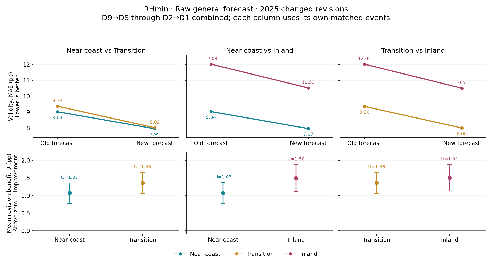
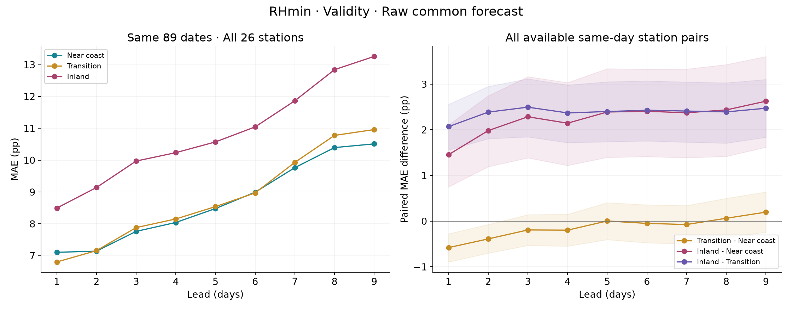
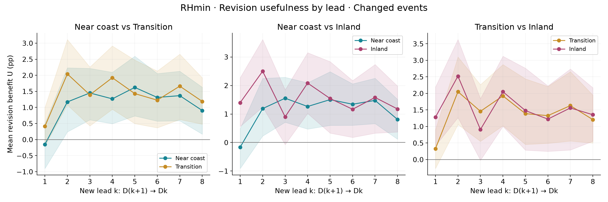
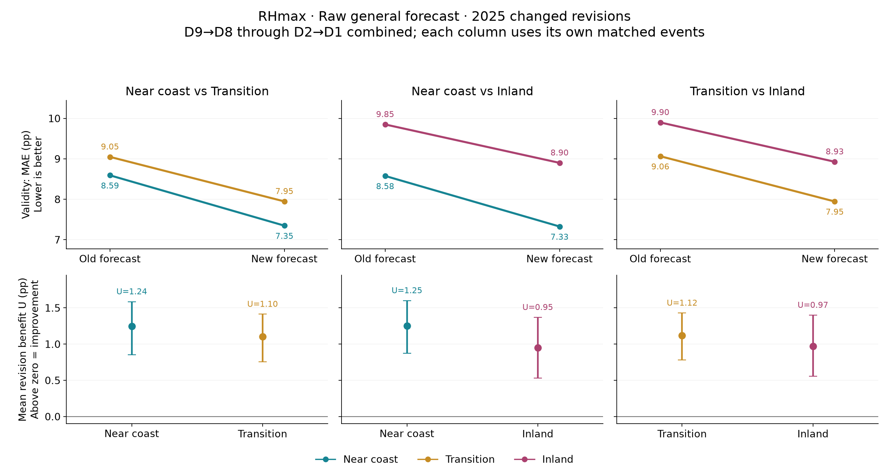
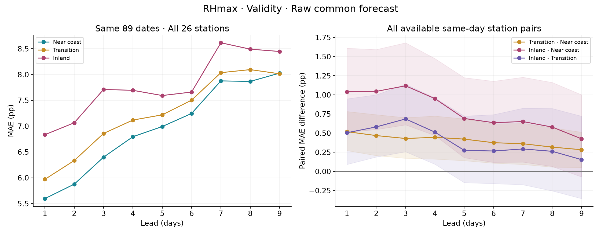
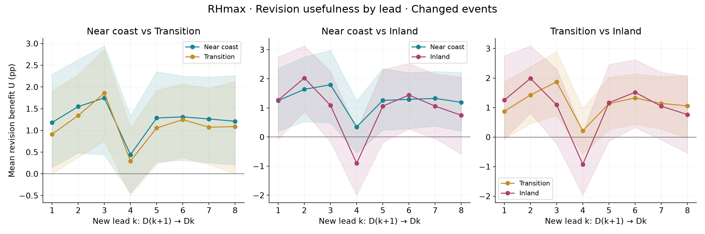

RHmin/RHmax、26站、三個海岸組。完整資料及全部圖見濕度理解報告。

為何做這圖：不假設尖沙咀為目標，直接檢查共同預報的地方吻合度與更新效益。上排X=舊／新版本，Y=MAE（pp），越低越吻合；下排X=地理組，Y=平均U，越高改善越多，誤差棒為95%區間。近岸藍綠、過渡橙、內陸紫紅，三欄各用自己的完全同事件樣本。
資料與讀法：每站對只用同目標日、同兩個版本，先平均事件，再跨組站對等權；26站全部保留，跨組共209站對。彙總D9→D8至D2→D1的changed-only事件，不是單一D9或八個lead等權。兩根U誤差棒的重疊不代替配對U差區間。
內陸／近岸發現：近岸MAE 9.038→7.965 pp；內陸 12.025→10.526 pp。更新後組差 2.560 [1.576, 3.478] pp（支持正方向）。近岸U 1.073 [0.778, 1.368]、內陸U 1.500 [1.113, 1.879] pp；U差 0.427 [0.090, 0.758] pp（支持正方向）。差距縮小C 0.427 [0.090, 0.758] pp（支持正方向）。
限制：每欄日期不同，同一組可有略不同數字，不能跨欄相減。所有指標都是對取樣RH極值的事後評分；general不是已確認的區域極值預報。MAE衡量剩餘誤差，U衡量改善量，所以原本較不吻合的組也可能獲益更多。這是探索性固定站群區間，不是因果結論。

左圖：X=lead1–9、Y=絕對MAE，三種顏色直接代表三組。每站同樣89個日期，每站先平均，再組內等站權；全年日曆只覆蓋89日，僅描述性，月份覆蓋見CSV。此圖沒有以缺測站偷偷改變組成。
右圖：X同樣lead，Y是B−A配對MAE差，線色代表對比而非單一組；正值表示前一組較不吻合。使用每站對所有可配對日期，保留更多資料；陰影為95%區間。不能把左圖的組差與右圖要求完全一致，因日期不同。
D9主要配對發現：內陸−近岸差 2.627 [1.620, 3.607] pp，支持正方向；各站對有265–324個有效日。所有lead和三組對比均保存，沒有只抽D9作分析。
假設／限制：共同預報不加offset、不按離HKO遠近放寬誤差。不同站對日期交集仍不同、缺測非隨機、每十分鐘取樣可能漏掉真實極值；此處的RHmin/RHmax不是日平均，也不是概率預報區間。

選軸與目的：X是新版本lead k=1–8，表示D(k+1)→Dk；Y為平均U（pp）。三組顏色固定，分欄以相同事件對比，避免all彙總掩蓋時效差異。高於零表示平均改善，陰影跨零表示該組該lead的方向證據不足；不能從線的上下順序判定兩組差異顯著。
數據：僅確有改動事件、同一目標日實測，站對等權。D9沒有D10舊版可配，不能補造D10→D9修訂。RHmin與RHmax的changed事件各自定義，所以兩變數圖不是完全同一批事件。
發現：內陸／近岸比較中，近岸有7/8個lead的U區間高於零，內陸有7/8個；內陸−近岸U差有1個支持正方向、0個支持負方向、7個證據不足。這些lead互相關聯，不能算作八次獨立驗證。
限制：彙總U不是每個lead保證改善。逐lead區間、改善率、惡化率與平均惡化幅度完整保存在contrasts及pairs CSV；採用同日區塊重抽，不能把重複站對當獨立事件。改善率與平均改善量是兩個不同指標。

為何做這圖：不假設尖沙咀為目標，直接檢查共同預報的地方吻合度與更新效益。上排X=舊／新版本，Y=MAE（pp），越低越吻合；下排X=地理組，Y=平均U，越高改善越多，誤差棒為95%區間。近岸藍綠、過渡橙、內陸紫紅，三欄各用自己的完全同事件樣本。
資料與讀法：每站對只用同目標日、同兩個版本，先平均事件，再跨組站對等權；26站全部保留，跨組共209站對。彙總D9→D8至D2→D1的changed-only事件，不是單一D9或八個lead等權。兩根U誤差棒的重疊不代替配對U差區間。
內陸／近岸發現：近岸MAE 8.578→7.327 pp；內陸 9.850→8.901 pp。更新後組差 1.573 [0.900, 2.213] pp（支持正方向）。近岸U 1.250 [0.873, 1.600]、內陸U 0.950 [0.533, 1.369] pp；U差 -0.301 [-0.585, -0.015] pp（支持負方向）。差距縮小C -0.301 [-0.585, -0.015] pp（支持負方向）。
限制：每欄日期不同，同一組可有略不同數字，不能跨欄相減。所有指標都是對取樣RH極值的事後評分；general不是已確認的區域極值預報。MAE衡量剩餘誤差，U衡量改善量，所以原本較不吻合的組也可能獲益更多。這是探索性固定站群區間，不是因果結論。

左圖：X=lead1–9、Y=絕對MAE，三種顏色直接代表三組。每站同樣89個日期，每站先平均，再組內等站權；全年日曆只覆蓋89日，僅描述性，月份覆蓋見CSV。此圖沒有以缺測站偷偷改變組成。
右圖：X同樣lead，Y是B−A配對MAE差，線色代表對比而非單一組；正值表示前一組較不吻合。使用每站對所有可配對日期，保留更多資料；陰影為95%區間。不能把左圖的組差與右圖要求完全一致，因日期不同。
D9主要配對發現：內陸−近岸差 0.426 [-0.072, 1.001] pp，證據不足；各站對有265–324個有效日。所有lead和三組對比均保存，沒有只抽D9作分析。
假設／限制：共同預報不加offset、不按離HKO遠近放寬誤差。不同站對日期交集仍不同、缺測非隨機、每十分鐘取樣可能漏掉真實極值；此處的RHmin/RHmax不是日平均，也不是概率預報區間。

選軸與目的：X是新版本lead k=1–8，表示D(k+1)→Dk；Y為平均U（pp）。三組顏色固定，分欄以相同事件對比，避免all彙總掩蓋時效差異。高於零表示平均改善，陰影跨零表示該組該lead的方向證據不足；不能從線的上下順序判定兩組差異顯著。
數據：僅確有改動事件、同一目標日實測，站對等權。D9沒有D10舊版可配，不能補造D10→D9修訂。RHmin與RHmax的changed事件各自定義，所以兩變數圖不是完全同一批事件。
發現：內陸／近岸比較中，近岸有7/8個lead的U區間高於零，內陸有2/8個；內陸−近岸U差有0個支持正方向、1個支持負方向、7個證據不足。這些lead互相關聯，不能算作八次獨立驗證。
限制：彙總U不是每個lead保證改善。逐lead區間、改善率、惡化率與平均惡化幅度完整保存在contrasts及pairs CSV；採用同日區塊重抽，不能把重複站對當獨立事件。改善率與平均改善量是兩個不同指標。